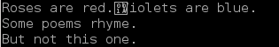

<html>
<head>
<link rel="stylesheet" type="text/css" href="new.css">
<title>File I/O</title>
</head>

<body>
<center><h1>File I/O</h1></center>


<blockquote>
<i>

</i>
</blockquote>

<!-- ************************************************************************************************ -->
<!-- ************************************************************************************************ -->
<!-- ************************************************************************************************ -->
<!-- ************************************************************************************************ -->
<p class="SectionHeader">
Files and Streams
</p>

Input/Output
<ul>
<li>Input and output (I/O) in C is done using <i>streams</i>.
<ul>
<li>An input stream is for input. (e.g. the keyboard)
<li>An output stream is for output. (e.g. the screen)
</ul>
<li>Other streams (network sockets, printers, a mouse, disk drives) can be used for input and/or output.
<li>Disk files can be used as streams and are very common and easy to use.
<li>Many of the I/O functions are almost identical to the ones used for stdin/stdout.
</ul>

To use files for input/output, you need to include <tt>&lt;stdio.h&gt;</tt>.
<p>
<hr width="90%">
<p>
Simple file output examples:

<blockquote><pre>
1.  FILE *fp; <font color="#003399"><i>/* For reading/writing to a file */</i></font>
2.
3.  fp = fopen(<font color="#9933CC">&quot;myfile&quot;</font>, <font color="#9933CC">&quot;w&quot;</font>);     <font color="#003399"><i>/* Open the file for write */</i></font>
4.  fputs(<font color="#9933CC">&quot;Line number 1\n&quot;</font>, fp);  <font color="#003399"><i>/* Write text to file      */</i></font>
5.  fputs(<font color="#9933CC">&quot;Line number 2\n&quot;</font>, fp);  <font color="#003399"><i>/* Write more text to file */</i></font>
6.  fputs(<font color="#9933CC">&quot;Line number 3\n&quot;</font>, fp);  <font color="#003399"><i>/* Write even more text    */</i></font>
7.  fclose(fp);                    <font color="#003399"><i>/* Close the file          */</i></font>
</pre></blockquote>

Descriptions:
<ul>
<li><b>Line 1</b>: Declare/define a <tt>FILE</tt> pointer so we can manipulate the file.
<li><b>Line 3</b>: Open a file for <b>w</b>rite (output) and name it <tt>myfile</tt> (on the disk). The file is opened for <b>t</b>ext/<b>t</b>ranslation.
<li><b>Line 4-6</b>: Write some strings to the file. 
<li><b>Line 7</b>: Close the file. (Very important)</li>
<li>Note that, unlike <tt>puts</tt>, <tt>fputs</tt> does not add a newline, so if you want one,
  you must provide it.</li>

</ul>

Reading from a file and writing to a file generally follow these steps:
<ol>
<li>Open the file (<tt><b>fopen</b></tt>)
<li>Read/Write the file (<tt><b>fgetc, fgets, fputc, fputs</b></tt>, etc.)
<li>Close the file (<tt><b>fclose</b></tt>)
</ol>

There is actually a very important piece missing from the code above. Corrected code:

<blockquote><pre>
 1.  FILE *fp; <font color="#003399"><i>/* For reading/writing to a file */</i></font>
 2.
 3.  fp = fopen(<font color="#9933CC">&quot;myfile&quot;</font>, <font color="#9933CC">&quot;w&quot;</font>);       <font color="#003399"><i>/* Open the file for write */</i></font>
 4.  <b>if</b> (fp != NULL)                  <font color="blue"><i><b>/* Check for success/fail  */</b></i></font>
 5.  {
 6.    fputs(<font color="#9933CC">&quot;Line number 1\n&quot;</font>, fp);  <font color="#003399"><i>/* Write text to file      */</i></font>
 7.    fputs(<font color="#9933CC">&quot;Line number 2\n&quot;</font>, fp);  <font color="#003399"><i>/* Write more text to file */</i></font>
 8.    fputs(<font color="#9933CC">&quot;Line number 3\n&quot;</font>, fp);  <font color="#003399"><i>/* Write even more text    */</i></font>
 9.    fclose(fp);                    <font color="#003399"><i>/* Close the file          */</i></font>
10.  }
</pre></blockquote>

You <b><big>must always</big></b> check the return value from <tt><b>fopen</b></tt>. If it fails, a <tt>NULL</tt> pointer is returned.

<p>
<table border=0 cellspacing=5 cellpadding=5>
<tr><th>Writing to a file</th><th>Writing to a file and the screen</th></tr>
<tr valign="top">
<td>
<blockquote><pre>
FILE *fp;

fp = fopen(<font color="#9933CC">&quot;myfile.txt&quot;</font>, <font color="#9933CC">&quot;w&quot;</font>);
<b>if</b> (fp)
{
  <b>int</b> i;
  <b>for</b> (i = 0; i &lt; 10; i++)
    fprintf(fp, <font color="#9933CC">&quot;Line number %i\n&quot;</font>, i);
  fclose(fp);
}


<b>Output (in the file):</b>
Line number 0
Line number 1
Line number 2
Line number 3
Line number 4
Line number 5
Line number 6
Line number 7
Line number 8
Line number 9
</pre></blockquote>
</td>
<td>
<blockquote><pre>
FILE *fp;

fp = fopen(<font color="#9933CC">&quot;myfile.txt&quot;</font>, <font color="#9933CC">&quot;w&quot;</font>);
<b>if</b> (fp)
{
  <b>int</b> i;
  <b>for</b> (i = 0; i &lt; 10; i++)
  {
    fprintf(fp, <font color="#9933CC">&quot;Line number %i\n&quot;</font>, i); <font color="#003399"><i>/* To file   */</i></font>
    printf(<font color="#9933CC">&quot;Line number %i\n&quot;</font>, i);      <font color="#003399"><i>/* To screen */</i></font>
  }
  fclose(fp);
}

<b>Output (on screen and in the file):</b>
Line number 0
Line number 1
Line number 2
Line number 3
Line number 4
Line number 5
Line number 6
Line number 7
Line number 8
Line number 9
</pre></blockquote>
</td>
</tr></table>

What's wrong with the code below?

<blockquote><pre>
  <font color="#003399"><i>/* Open the file for write */</i></font>  
FILE *fp = fopen(<font color="#9933CC">&quot;myfile&quot;</font>, <font color="#9933CC">&quot;w&quot;</font>);

<b>if</b> (fp == NULL)                  
{
  printf(<font color="#9933CC">&quot;Failed to open the file: myfile.txt&#92;n&quot;</font>);  <font color="#003399"><i>/* Print error message */</i></font>
}
<b>else</b>
{
  <font color="#003399"><i>/* Write some stuff to the file */</i></font>
}

fclose(fp);
</pre></blockquote>


<p>
<p>
<!-- ************************************************************************************************ -->
<!-- ************************************************************************************************ -->
<p class="SectionHeader">
Basic Input
</p>

The simplest facilities for unformatted input in C are <b>getchar</b> and <b>gets</b>:

<blockquote><pre>
<b>int</b> <a href="http://www.cplusplus.com/reference/cstdio/getchar/">getchar</a>(<b>void</b>);
<b>char</b> *<a href="http://www.cplusplus.com/reference/cstdio/gets/">gets</a>(<b>char</b> *buffer);
</pre></blockquote>

Notes:
<ul>
<li><b>getchar</b> returns an integer; need to detect <b>E</b>nd <b>O</b>f <b>F</b>ile (EOF).
  This is defined in <tt>stdio.h</tt>:
<blockquote><pre>
#define EOF (-1)  
</pre></blockquote>
<li>The buffer passed to <b>gets</b> must be large enough as there is no overflow checking. 
<blockquote>
This situation has been the primary source of hacks on the Internet. These errors are known as 
<i>buffer overruns</i> and probably still exist in a lot of code out there.
</blockquote>
</ul>

File versions of the above:
<blockquote><pre>
<b>int</b> <a href="http://www.cplusplus.com/reference/cstdio/fgetc">fgetc</a>(FILE *stream);
<b>char</b> *<a href="http://www.cplusplus.com/reference/cstdio/fgets/">fgets</a>(<b>char</b> *string, <b>int</b> count, FILE *stream);
</pre></blockquote>


<!--
Functions/macros for unformatted input from <b>stdin</b> or a specified FILE pointer:
<blockquote><pre>
  <font color="#003399"><i>// These two input from <b>stdin</b></i></font>
<b>int</b> getchar( <b>void</b> ); <font color="#003399"><i>// macro</i></font>
<b>char</b> *gets( <b>char</b> *buffer );

  <font color="#003399"><i>// You need to specify the stream with these</i></font>
<b>int</b> getc( FILE *stream ); <font color="#003399"><i>// macro</i></font>
<b>int</b> fgetc( FILE *stream );
<b>char</b> *fgets( <b>char</b> *string, <b>int</b> n, FILE *stream );
</pre></blockquote>
-->

Notes:
<ul>
<li><b>gets</b> reads all characters up to and including the newline but replaces
the newline with a NUL byte before returning.
<li>Be sure to account for the newline/NUL when sizing the buffer for <b>gets</b>.
<li><b>fgets</b> reads <i>count - 1</i> characters or until the newline is reached, whichever
is less. Unlike <b>gets</b>, the newline is not replaced with a NUL. A NUL byte 
is inserted <i>after</i> the newline. 
<li>Since <b>fgets</b> takes the number of characters to read as a parameter, you have
more control.
<li>You can also redirect the input to your program so that it comes from somewhere
other than the keyboard (e.g. a file). You use the input redirection operator at the
console '<'. 
</ul>


	
	
Simple input examples:

Suppose we have a text file named <tt>poem.txt</tt> and it contains this:

<blockquote><pre>
Roses are red.&lt;NL&gt;
Violets are blue.&lt;NL&gt;
Some poems rhyme.&lt;NL&gt;
But not this one.&lt;NL&gt;
</pre></blockquote>

The <tt>&lt;NL&gt;</tt> indicates the (invisible) newline in the file. Looking at the file
with the <tt><b>od</b></tt> program (octal dump) on Linux or Mac OS X:
<p>

<blockquote><pre>
mmead@sabrina:~/data/digipen/cs120> <b>od -a poem.txt</b>
0000000   R   o   s   e   s  sp   a   r   e  sp   r   e   d   .  <font color="red"><b>nl</b></font>   V
0000020   i   o   l   e   t   s  sp   a   r   e  sp   b   l   u   e   .
0000040  <font color="red"><b>nl</b></font>   S   o   m   e  sp   p   o   e   m   s  sp   r   h   y   m
0000060   e   .  <font color="red"><b>nl</b></font>   B   u   t  sp   n   o   t  sp   t   h   i   s  sp
0000100   o   n   e   .  <font color="red"><b>nl</b></font>
0000105
</pre></blockquote>

The same file under Windows (Cygwin):
<blockquote><pre>
E:\Data\Courses\Notes\CS120\Code\FileIO><b>od -a poem.txt</b>
0000000   R   o   s   e   s  sp   a   r   e  sp   r   e   d   .  <font color="red"><b>cr  nl</b></font>
0000020   V   i   o   l   e   t   s  sp   a   r   e  sp   b   l   u   e
0000040   .  <font color="red"><b>cr  nl</b></font>   S   o   m   e  sp   p   o   e   m   s  sp   r   h
0000060   y   m   e   .  <font color="red"><b>cr  nl</b></font>   B   u   t  sp   n   o   t  sp   t   h
0000100   i   s  sp   o   n   e   .  <font color="red"><b>cr  nl</b></font>
0000111
</pre></blockquote>

This example program reads in the text file:

<blockquote><pre>
<b>#define</b> BUFFER_SIZE 50    <font color="#003399"><i>/* How big our buffer will be         */</i></font>
<b>char</b> buffer[BUFFER_SIZE]; <font color="#003399"><i>/* To hold each line from the file    */</i></font>
FILE *fp;                 <font color="#003399"><i>/* The pointer to manipulate the file */</i></font>

fp = fopen(<font color="#9933CC">&quot;poem.txt&quot;</font>, <font color="#9933CC">&quot;r&quot;</font>);        <font color="#003399"><i>/* Try to open the file for reading */</i></font>
<b>if</b> (fp)                             <font color="#003399"><i>/* The file was opened successfully */</i></font>
{
  <b>while</b> (!feof(fp))                 <font color="#003399"><i>/* While not at the end of the file */</i></font>
  {
    fgets(buffer, BUFFER_SIZE, fp); <font color="#003399"><i>/* Read in the next line            */</i></font>
    printf(buffer);                 <font color="#003399"><i>/* Print it out on the screen       */</i></font>
  }
  fclose(fp);                       <font color="#003399"><i>/* Close the file                   */</i></font>
}

<b>Output:</b>
Roses are red.
Violets are blue.
Some poems rhyme.
But not this one.
But not this one.
</pre></blockquote>

The corrected code:

<blockquote><pre>
<b>void</b> f5(<b>void</b>)
{
  <b>#define</b> BUFFER_SIZE 50    <font color="#003399"><i>/* How big our buffer will be         */</i></font>
  <b>char</b> buffer[BUFFER_SIZE]; <font color="#003399"><i>/* To hold each line from the file    */</i></font>
  FILE *fp;                 <font color="#003399"><i>/* The pointer to manipulate the file */</i></font>

  fp = fopen(<font color="#9933CC">&quot;poem.txt&quot;</font>, <font color="#9933CC">&quot;r&quot;</font>);  <font color="#003399"><i>/* Try to open the file for reading */</i></font>
  <b>if</b> (fp)                       <font color="#003399"><i>/* The file was opened successfully */</i></font>
  {
    <b>while</b> (!feof(fp))           <font color="#003399"><i>/* While not at the end of the file */</i></font>
    {
      <b>if</b> (fgets(buffer, BUFFER_SIZE, fp)) <font color="#003399"><i>/* Read in the next line      */</i></font>
        printf(buffer);                   <font color="#003399"><i>/* Print it out on the screen */</i></font>
    }
    fclose(fp);                           <font color="#003399"><i>/* Close the file             */</i></font>
  }
}

<b>Output:</b>
Roses are red.
Violets are blue.
Some poems rhyme.
But not this one.

</pre></blockquote>

Another way to solve the problem:

<blockquote><pre>
fp = fopen(<font color="#9933CC">&quot;poem.txt&quot;</font>, <font color="#9933CC">&quot;r&quot;</font>);  <font color="#003399"><i>/* Try to open the file for reading */</i></font>
<b>if</b> (fp)                       <font color="#003399"><i>/* The file was opened successfully */</i></font>
{
  <b>while</b> (fgets(buffer, BUFFER_SIZE, fp)) <font color="#003399"><i>/* Read in the next line      */</i></font>
    printf(buffer);                      <font color="#003399"><i>/* Print it out on the screen */</i></font>

  fclose(fp);                            <font color="#003399"><i>/* Close the file             */</i></font>
}
</pre></blockquote>
<p>

Default open streams:
<ul>
<li><tt><b>stdin</b></tt> - Input, usually the keyboard
<li><tt><b>stdout</b></tt> - Output, usually the display (screen)
<li><tt><b>stderr</b></tt> - Output, usually the display (screen)
<!--
<li><b>stdaux</b> - from DOS/Win16 (obsolete)
<li><b>stdprn</b> - from DOS/Win16 (obsolete)
-->
</ul>
They are part of the standard I/O library in <tt><b>stdio.h</b></tt> so you don't need to declare them.
<p>
You will probably never have to deal with the internal structure of a FILE and can just assume
that the standard I/O devices are declared like this:
<blockquote><pre>
FILE *stdin;
FILE *stdout;
FILE *stderr;
</pre></blockquote>

<p>
The definition of a FILE used by Microsoft's compiler:

<blockquote><pre>
<b>struct</b> _iobuf {
        <b>char</b> *_ptr;
        <b>int</b>   _cnt;
        <b>char</b> *_base;
        <b>int</b>   _flag;
        <b>int</b>   _file;
        <b>int</b>   _charbuf;
        <b>int</b>   _bufsiz;
        <b>char</b> *_tmpfname;
        };
<b>typedef</b> <b>struct</b> _iobuf FILE;

_CRTIMP <b>extern</b> FILE _iob[];

<b>#define</b> stdin  (&amp;_iob[0])
<b>#define</b> stdout (&amp;_iob[1])
<b>#define</b> stderr (&amp;_iob[2])
</pre></blockquote>

<p>


The example program above modified to write to <b><tt>stdout</tt></b>. Don't have to open it, it's always open:
<table cellspacing=5 cellpadding=5>
<tr><th>Code</th><th>Output to screen/stdout</th></tr>
<tr valign="top">
<td>
<blockquote><pre>
<b>int</b> i;
<b>for</b> (i = 0; i &lt; 10; i++)
  fprintf(stdout, <font color="#9933CC">&quot;Line number %i\n&quot;</font>, i);
</pre></blockquote>
</td>
<td>
<blockquote><pre>
Line number 0
Line number 1
Line number 2
Line number 3
Line number 4
Line number 5
Line number 6
Line number 7
Line number 8
Line number 9
</pre></blockquote>
</td>
</tr></table>
<p>

In fact, these two lines are essentially equivalent. (<i>printf</i> probably just calls <i>fprintf</i>, 
which could just call <i>sprintf</i> then <i>puts</i>, which could just call <i>fwrite</i>, which
probably calls <i>write</i>, which calls... You get the idea.)

<blockquote><pre>
printf(<font color="#9933CC">&quot;Line number %i\n&quot;</font>, i);          <font color="#003399"><i>/* Write to stdout/screen */</i></font>
fprintf(stdout, <font color="#9933CC">&quot;Line number %i\n&quot;</font>, i); <font color="#003399"><i>/* Write to stdout/screen */</i></font>
</pre></blockquote>


<!-- ************************************************************************************************ -->
<!-- ************************************************************************************************ -->

<!--
To use the Input/Output facilities of C, you need to include <tt><b>stdio.h</b></tt>.
<p>

The simplest facilities for unformatted output in C are <b>putchar</b> and <b>puts</b>:

<blockquote><pre>
<b>int</b> putchar(<b>int</b> c);
<b>int</b> puts(<b>const</b> <b>char</b> *string);
</pre></blockquote>

Both mechanisms output the character or string at the current cursor position.
<p>
-->

<!--

<p>
The definition of a FILE used by Microsoft's compiler:

<blockquote><pre>
<b>struct</b> _iobuf {
        <b>char</b> *_ptr;
        <b>int</b>   _cnt;
        <b>char</b> *_base;
        <b>int</b>   _flag;
        <b>int</b>   _file;
        <b>int</b>   _charbuf;
        <b>int</b>   _bufsiz;
        <b>char</b> *_tmpfname;
        };
<b>typedef</b> <b>struct</b> _iobuf FILE;

_CRTIMP <b>extern</b> FILE _iob[];

<b>#define</b> stdin  (&amp;_iob[0])
<b>#define</b> stdout (&amp;_iob[1])
<b>#define</b> stderr (&amp;_iob[2])
</pre></blockquote>

<p>
Functions/macros for unformatted output to <b>stdout</b> or a specified FILE pointer:
<blockquote><pre>
  <font color="#003399"><i>// These two output to <b>stdout</b></i></font>
<b>int</b> putchar( <b>int</b> c );  <font color="#003399"><i>// macro</i></font>
<b>int</b> puts( <b>const</b> <b>char</b> *string );

  <font color="#003399"><i>// You need to specify the stream with these</i></font>
<b>int</b> putc( <b>int</b> c, FILE *stream ); <font color="#003399"><i>// macro</i></font>
<b>int</b> fputc( <b>int</b> c, FILE *stream );
<b>int</b> fputs( <b>const</b> <b>char</b> *string, FILE *stream );
</pre></blockquote>
-->

Notes:
<ul>
<li><b>puts</b> writes adds a newline to the output</li> <!-- instead of the NUL character at the end. -->
<li><b>fputs</b> writes the characters up to the NUL byte.</li>
<li>The following lines produce the same results:
<blockquote><pre>
puts(<font color="#9933CC">&quot;This is a line of text&quot;</font>);
fputs(<font color="#9933CC">&quot;This is a line of text\n&quot;</font>, stdout);
</pre></blockquote>

<li>Usually, "normal" output is sent to <b>stdout</b>.
<li>Usually, error messages are sent to <b>stderr</b>.
<li>You can send some text to <b>stdout</b>, and some to <b>stderr</b>:
<blockquote><pre>
puts(<font color="#9933CC">&quot;1. This line goes to stdout&quot;</font>);
fputs(<font color="#9933CC">&quot;2. This line goes to stdout\n&quot;</font>, stdout);
fputs(<font color="#9933CC">&quot;3. This line goes to stderr\n&quot;</font>, stderr);
</pre></blockquote>


<li>By default, both end up on the display, so it's hard to tell what is an error and what is "normal" output.
<li>The OS can <i>redirect</i> these streams to other destinations (by using the output redirection operators in
a console window).
<li>This allows you to change the destination of your output after building your program.
</ul>

<p class="SectionHeader">
Redirecting <b>stdout</b> and <b>stderr</b>
</p>

<p>

Suppose we had a function that did this:

<blockquote><pre>
<b>void</b> ShowOutErr(<b>void</b>)
{
  fputs(<font color="#9933CC">&quot;This is going to stdout\n&quot;</font>, stdout);
  fputs(<font color="#9933CC">&quot;This is going to stderr\n&quot;</font>, stderr);
}
</pre></blockquote>

By default, running this program would produce this output on the console (display):

<blockquote><pre>
This is going to stdout
This is going to stderr
</pre></blockquote>

We can redirect these messages to a file by using the output redirection operator at the console. (Assume the
function above compiles to a program called <b>myprog</b>.)


<blockquote><pre>
myprog > out.txt
</pre></blockquote>

When we run the program, we see this printed to the screen:

<blockquote><pre>
This is going to stderr
</pre></blockquote>

What happened to the line "This is going to stdout"? Well, it was redirected to a file named <b>out.txt</b>.
If we look at the contents of this file, using the <i>cat</i> command:

<blockquote><pre>
cat out.txt
</pre></blockquote>

we see:

<blockquote><pre>
This is going to stdout
</pre></blockquote>

To redirect <b>stderr</b>, we need to do this:

<blockquote><pre>
myprog 2> err.txt
</pre></blockquote>

This produces the output:

<blockquote><pre>
This is going to stdout
</pre></blockquote>

The redirection also created a file named <b>err.txt</b> that contains the other line of text.
<p>
To redirect both, we do this:

<blockquote><pre>
myprog > out.txt 2> err.txt
</pre></blockquote>

which produces no output on the screen. 
Both lines of text have been redirected to their respective files (<b>out.txt</b> and <b>err.txt</b>).


<p>

If we want both <b>stdout</b> and <b>stderr</b> redirected to the same file (<b>both.txt</b>), we would do this:

<blockquote><pre>
myprog > both.txt 2>&1
</pre></blockquote>

The syntax: <tt>2>&1</tt> means that <b>stderr</b> should be redirected to <b>stdout</b> so they
are both going to the same place.
<p>
Notes:
<ul>
<li>Using the output redirection operator '<tt>></tt>' causes the file to be overwritten with the new text. 
<li>If you want to append to a file, use the append operator '<tt>>></tt>'. Appending to a non-existent file will create the file. 
<li>Also, the output redirection operator '<tt>></tt>' is the same as '<tt>1></tt>'. The '<tt>1</tt>' is implied. These are
all are equivalent:
<blockquote><pre>
myprog > out.txt 2> err.txt
myprog 1> out.txt 2> err.txt
myprog 2> err.txt > out.txt
myprog 2> err.txt 1> out.txt
</pre></blockquote>

</ul>


<!-- ************************************************************************************************ -->
<!-- ************************************************************************************************ -->
<!-- ************************************************************************************************ -->
<!-- ************************************************************************************************ -->
<p class="SectionHeader">
More Details for Input/Output
</p>


<ul>
<li>C provides a standard way of reading and writing data from files (streams).
<li>Typically, the C standard functions (or macros) take a FILE *, indicating the source/destination
of the data.
<li>Streams are treated as either <i>text</i> or <i>binary</i>. (translated vs. untranslated or cooked vs. raw)
<li>Text streams vary between systems due to the translations that occur during reading and writing.
<li>No translation is performed on binary streams.
</ul>

Text streams have certain attributes that may vary among different systems:
<ul>
<li>The contents of the file are usually limited to characters in the range of ASCII 32 - 127,
although the extended characters (> 127) can be included in some implementations.
Characters < 32 are considered <i>control</i> characters and are usually <i>non-printable</i>.
<li>There is a maximum limit to the length of a line of text. The limit is at least 254 characters (per the Standard)
<li>The <b>E</b>nd <b>O</b>f <b>L</b>ine character varies, depending on the operating system: 
<ul>
<li>On Unix/Linux/Mac OS X the EOL is the line feed. (LF, ASCII 0x0A)
<li>On older Macintosh, the EOL is the carriage return. (CR, ASCII 0x0D)
<li>On MSDOS/Windows the EOL character is actually two characters: 
a carriage return, and a line feed (ASCII 0x0D and 0x0A).
</ul>
<li>When treating files as <i>text</i> files, the translation between the varying EOL characters
is done automatically. This is the primary reason for distinguishing between text and binary.
<li>Technically, a text file is (from the 
<a href="http://www.opengroup.org/onlinepubs/007904975/basedefs/xbd_chap03.html#tag_03_392">IEEE Standard definition</a>):
<blockquote>
<p class="technote">
A file that contains characters organized into one or more lines. The lines do not contain NUL characters 
and none can exceed {LINE_MAX} bytes in length, including the &lt;newline&gt;. Although IEEE Std 1003.1-2001 
does not distinguish between text files and binary files (see the ISO C standard), many utilities only 
produce predictable or meaningful output when operating on text files. The standard utilities that have 
such restrictions always specify "text files" in their STDIN or INPUT FILES sections.
</p>
</blockquote>

Here's a portion of a POSIX header file that defines the maximum line length:
<blockquote><pre>
<font color="#003399"><i>/* The maximum length, in bytes, of an input line.  */</i></font>
<b>#define</b> _POSIX2_LINE_MAX    2048
<b>#define</b> LINE_MAX            _POSIX2_LINE_MAX
</pre></blockquote>

</ul>

There are two cases where the text vs. binary mode makes a difference. The first one
is mentioned above: The line endings. The second case is how some systems deal with
the EOF (End Of File) character in a file. This character is ASCII 26. Some systems,
when they encounter the EOF character in file opened as text, will simply stop reading the file as if the
end has been reached. 
<p>
Let's look at a couple of examples. There are two different files below. One has line-feed
endings (macOS X and Linux), and the other has carriage-return line-feed endings
(Windows).
<p>
<a href="poem-lf.txt">poem-lf.txt</a> (69 bytes) &nbsp;&nbsp;&nbsp;
<a href="poem-crlf.txt">poem-crlf.txt</a> (73 bytes)
<p>
You won't see any difference between the files when viewing with a browser. You 
must download them to your computer to see the differences. Here are the hex dumps:

<blockquote><pre>
<b>poem-lf.txt:</b>
       00 01 02 03 04 05 06 07  08 09 0A 0B 0C 0D 0E 0F
--------------------------------------------------------------------------
000000 52 6F 73 65 73 20 61 72  65 20 72 65 64 2E 0A 56   Roses are red..V
000010 69 6F 6C 65 74 73 20 61  72 65 20 62 6C 75 65 2E   iolets are blue.
000020 0A 53 6F 6D 65 20 70 6F  65 6D 73 20 72 68 79 6D   .Some poems rhym
000030 65 2E 0A 42 75 74 20 6E  6F 74 20 74 68 69 73 20   e..But not this 
000040 6F 6E 65 2E 0A                                     one..
</pre></blockquote>


<blockquote><pre>
<b>poem-crlf.txt:</b>
       00 01 02 03 04 05 06 07  08 09 0A 0B 0C 0D 0E 0F
--------------------------------------------------------------------------
000000 52 6F 73 65 73 20 61 72  65 20 72 65 64 2E 0D 0A   Roses are red...
000010 56 69 6F 6C 65 74 73 20  61 72 65 20 62 6C 75 65   Violets are blue
000020 2E 0D 0A 53 6F 6D 65 20  70 6F 65 6D 73 20 72 68   ...Some poems rh
000030 79 6D 65 2E 0D 0A 42 75  74 20 6E 6F 74 20 74 68   yme...But not th
000040 69 73 20 6F 6E 65 2E 0D  0A                        is one...
</pre></blockquote>

<p>
Here's a simple program that will read a given file with a given mode:

<pre class="sourcecode"><code><font color="990099">#include &lt;stdio.h&gt;  /* printf, fopen, fclose, fgets */</font>
<font color="990099">#include &lt;string.h&gt; /* strlen                       */</font>

<b>int</b> main(<b>int</b> argc, <b>char</b> **argv)
{
  FILE *fp;         <font color="#003399"><i>/* File pointer to read */</i></font>
  <b>char</b> buffer[100]; <font color="#003399"><i>/* Maximum line length  */</i></font>

    <font color="#003399"><i>/* Must be given a filename and mode on the command line */</i></font>
  <b>if</b> (argc &lt; 3)
  {
    printf(<font color="#9933CC">&quot;Must specify file to read and mode (r/rb/rt)&#92;n&quot;</font>);
    <b>return</b> 1;
  }

    <font color="#003399"><i>/* Try to open the file in the given mode */</i></font>
  fp = fopen(argv[1], argv[2]);
  <b>if</b> (!fp)
  {
    printf(<font color="#9933CC">&quot;Can't open %s for %s&#92;n&quot;</font>, argv[1], argv[2]);
    <b>return</b> 2;
  }

    <font color="#003399"><i>/* Read each line in the file and print it out with it's length */</i></font>
  <b>while</b> (!feof(fp))
  {
    <b>if</b> (fgets(buffer, 100, fp))
    {
      printf(<font color="#9933CC">&quot;%s&quot;</font>, buffer);
      printf(<font color="#9933CC">&quot;Length is %li&#92;n&quot;</font>, strlen(buffer));
    }
  }

    <font color="#003399"><i>/* Done reading, clean up */</i></font>
  fclose(fp);

  <b>return</b> 0;
}
</code></pre>

Reading the files under Linux and macOS X using the specified mode:
<blockquote>
<table cellspacing=1 cellpadding=10 border=0>
<tr><th>Mode</th><th></th><th>Output</th></tr>

<tr valign="top">
<td>
<pre>
fp = fopen(<font color="#9933CC">&quot;poem-lf.txt&quot;</font><font color="#9933CC">, &quot;r&quot;);</font>
fp = fopen(<font color="#9933CC">&quot;poem-lf.txt&quot;</font><font color="#9933CC">, &quot;rb&quot;);</font>
</pre>
</td>
<td></td>
<td>
<pre>
Roses are red.
Length is 15
Violets are blue.
Length is 18
Some poems rhyme.
Length is 18
But not this one.
Length is 18
</pre>
</td>
</tr>

<tr valign="top">
<td>
<pre>
fp = fopen(<font color="#9933CC">&quot;poem-crlf.txt&quot;</font><font color="#9933CC">, &quot;r&quot;);</font>
fp = fopen(<font color="#9933CC">&quot;poem-crlf.txt&quot;</font><font color="#9933CC">, &quot;rb&quot;);</font>
</pre>
</td>
<td></td>
<td>
<pre>
Roses are red.
Length is 16
Violets are blue.
Length is 19
Some poems rhyme.
Length is 19
But not this one.
Length is 19
</pre>
</td>
</tr>
</table>
</blockquote>

Reading the files under Windows using the specified mode:
<blockquote>
<table cellspacing=1 cellpadding=10 border=0>
<tr><th>Mode</th><th></th><th>Output</th></tr>

<tr valign="top">
<td>
<pre>
fp = fopen(<font color="#9933CC">&quot;poem-lf.txt&quot;</font><font color="#9933CC">, &quot;r&quot;);</font>
fp = fopen(<font color="#9933CC">&quot;poem-lf.txt&quot;</font><font color="#9933CC">, &quot;rb&quot;);</font>
</pre>
</td>
<td></td>
<td>
<pre>
Roses are red.
Length is 15
Violets are blue.
Length is 18
Some poems rhyme.
Length is 18
But not this one.
Length is 18
</pre>
</td>
</tr>

<tr valign="top">
<td>
<pre>
fp = fopen(<font color="#9933CC">&quot;poem-crlf.txt&quot;</font><font color="#9933CC">, &quot;r&quot;);</font>
</pre>
</td>
<td></td>
<td>
<pre>
Roses are red.
Length is 15
Violets are blue.
Length is 18
Some poems rhyme.
Length is 18
But not this one.
Length is 18
</pre>
</td>
</tr>

<tr valign="top">
<td>
<pre>
fp = fopen(<font color="#9933CC">&quot;poem-crlf.txt&quot;</font><font color="#9933CC">, &quot;rb&quot;);</font>
</pre>
</td>
<td></td>
<td>
<pre>
Roses are red.
Length is 16
Violets are blue.
Length is 19
Some poems rhyme.
Length is 19
But not this one.
Length is 19
</pre>
</td>
</tr>
</table>

</blockquote>

This "text" file has an embedded EOF character (ASCII 26, hex 0x1A). It replaces the newline
character at the end of the first line: <a href="eof.txt">eof.txt</a>. Here's the 
hex dump:

<blockquote><pre>
eof.txt:
       00 01 02 03 04 05 06 07  08 09 0A 0B 0C 0D 0E 0F
--------------------------------------------------------------------------
000000 52 6F 73 65 73 20 61 72  65 20 72 65 64 2E <font color="blue"><b>1A</b></font> 56   Roses are red..V
000010 69 6F 6C 65 74 73 20 61  72 65 20 62 6C 75 65 2E   iolets are blue.
000020 0A 53 6F 6D 65 20 70 6F  65 6D 73 20 72 68 79 6D   .Some poems rhym
000030 65 2E 0A 42 75 74 20 6E  6F 74 20 74 68 69 73 20   e..But not this 
000040 6F 6E 65 2E 0A                                     one..
</pre></blockquote>

On Linux and macOS using the <tt><b>cat</b></tt> command:
<blockquote><pre>
cat eof.txt

Roses are red.Violets are blue.
Some poems rhyme.
But not this one.
</pre></blockquote>

It may not show correctly because these "unprintable" characters vary from system to system.
Here's an actual screenshot of what the output looks like on macOS X or Linux:
<p>
<blockquote>

</blockquote>

Running the equivalent of the <tt><b>cat</b></tt> command on Windows
(the <tt><b>type</b></tt> command)

<blockquote><pre>
type eof.txt

Roses are red.
</pre></blockquote>

This clearly shows that Windows treats files opened in <i>text</i> differently than
files opened in <i>binary</i> mode. From the man page for <i>fopen</i>:

<p class="technote">
The mode string can also include the letter 'b' either as a last
character or as a character between the characters in any of the two-
character strings described above.  This is strictly for
compatibility with C89 and has no effect; the 'b' is ignored on all
POSIX conforming systems, including Linux.  (Other systems may treat
text files and binary files differently, and adding the 'b' may be a
good idea if you do I/O to a binary file and expect that your program
may be ported to non-UNIX environments.)
</p>

The <i>Other system...</i> referered to is Windows.

<p class="technote">
<b>Tip:</b> Keep this difference in mind when reading binary files on Windows. 
If you are attempting to read from a file and the file
reports that there is no more data, but you know there should be more, this may
be the problem. This is a
classic tell-tale sign that you're reading a binary file in text mode.
I've lost count of how many times I've seen students do this.
</p>

<blockquote><pre>
</pre></blockquote>

<blockquote><pre>
</pre></blockquote>

<!--
<br><br><br><br><br><br><br><br><br><br>
<hr><hr><hr>
-->

Binary files have no restrictions or limitations. It is up to the programmer to decide when to
interpret a file as a text file, and when to interpret it as a binary file.
<p>

Like most languages, reading from a file and writing to a file follow these steps:
<ol>
<li>Open the file (<b>fopen</b>)
<li>Read/Write the file (<b>fgetc, fgets, fputc, fputs, fprintf, fscanf</b>, etc.)
<li>Close the file (<b>fclose</b>)
</ol>

These two functions are required in all cases:
<blockquote><pre>
FILE *fopen(<b>const</b> <b>char</b> *filename, <b>const</b> <b>char</b> *mode);
<b>int</b> fclose(FILE *stream);
</pre></blockquote>

Notes:
<ul>
<li><b>fopen</b> returns a valid FILE * if the specified file was successfully opened, otherwise it
returns NULL.
<li><b>fclose</b> returns 0 if successful and EOF if not.
<li>The second parameter to <b>fopen</b> is the <i>mode</i> and some values are:
<blockquote><pre>
        | Read (input)   Write (output)  Append (output)
--------+----------------------------------------------        
Text    |      "r"           "w"             "a"
Binary  |      "rb"          "wb"            "ab"
<!--Depends |      "r"           "w"             "a"-->
</pre></blockquote>

<li>The default mode is text/translate mode.</li>

<!--
<li>The default mode has historically been text. To be sure you want text or binary, add a <b>t</b> or <b>b</b> (e.g. "wt" for text writing) explicitly.
Text mode is also referred to as <i>translate</i> mode, because the EOL characters are translated.

<blockquote>
<p class="technote">
Strictly speaking, the <tt><b>t</b></tt> isn't part of the C standard but it's required when using
<a href="https://msdn.microsoft.com/en-us/library/yeby3zcb%28v=vs.140%29.aspx">fopen on Microsoft Windows.</a>
  In all of my years working with Unix and Windows, I've never had a problem using
it. Unix (read: Linux and Mac OS X) seem to ignore the <tt><b>t</b></tt> and treat all files the
same. If you use <tt><b>t</b></tt> for text files and <tt><b>b</b></tt> for other files, all of
your programs should be portable.
</p>
</blockquote>
->

<!--
(Technically, <b>t</b> is not part of the Standard for C89, but I've never seen a compiler 
which didn't accept it.)
<tt><b></b></tt>
-->

<li>Appending a <b>+</b> to the mode opens the file for update, which is reading and writing.</li>
<li>More details:</li>
<ul>
<li><b>r</b> Opens an <i>existing</i> file for reading. If the file does not exist, <b>fopen</b> fails and returns NULL.</li>
<li><b>w</b> Opens a file for writing. If the file exists, its contents are destroyed, otherwise the 
  file is created.</li>
<li><b>a</b> Opens for writing at the end of the file (appending); creates the file if it doesn't exist.</li>
<li><b>r+</b> Opens for both reading and writing. The file must exist.</li>
<li><b>w+</b> Opens a file for both reading and writing. If the given file exists, its contents 
are destroyed; creates a new file if it doesn't exist.</li>
<li><b>a+</b> Opens for reading and appending; creates the file if it doesn't exist.</li>
</ul>
<li>Opening a file in read/write mode is generally for binary files that contain fixed-sized
  records (e.g. databases)</li>
</ul>

Here's a partial page from ANSI C Standard (7.9.5.3) regarding <i>fopen</i>

<blockquote>
<b>Description</b>
<p>
&nbsp;&nbsp;&nbsp;&nbsp;&nbsp;&nbsp;&nbsp;The <i>fopen</i> function opens the file whose name is the string pointed to by <i>filename</i>
and associates a stream with it.
<p>
&nbsp;&nbsp;&nbsp;&nbsp;&nbsp;&nbsp;&nbsp;The argument <i>mode</i> points to a string beginning with one of the following sequences:<sup>115</sup>
<p>
<table cellspacing=1 cellpadding=5 border=1>
<tr><td><tt><b>r</b></tt></td><td>open text file for reading</td></tr>
<tr><td><tt><b>w</b></tt></td><td>truncate to zero length or create text file for writing</td></tr>
<tr><td><tt><b>a</b></tt></td><td>append; open or create text file for writing at end-of-file</td></tr>
<tr><td><tt><b>rb</b></tt></td><td>open binary file for reading</td></tr>
<tr><td><tt><b>wb</b></tt></td><td>truncate to zero length or create binary file for writing</td></tr>
<tr><td><tt><b>ab</b></tt></td><td>append; open or create binary file for writing at end-of-file</td></tr>
<tr><td><tt><b>r+</b></tt></td><td>open text file for update (reading and writing)</td></tr>
<tr><td><tt><b>w+</b></tt></td><td>truncate to zero length or create text file for update</td></tr>
<tr><td><tt><b>a+</b></tt></td><td>append; open or create text file for update, writing at end-of-file</td></tr>
<tr><td><tt><b>r+b</b></tt> or <tt><b>rb+</b></tt></td><td>open binary file for update (reading and writing)</td></tr>
<tr><td><tt><b>w+b</b></tt> or <tt><b>wb+</b></tt></td><td>truncate to zero length or create binary file for update</td></tr>
<tr><td><tt><b>a+b</b></tt> or <tt><b>ab+</b></tt></td><td>append; open or create binary file for update, writing at end-of-file</td></tr>
</table>
<p>

&nbsp;&nbsp;&nbsp;&nbsp;&nbsp;&nbsp;&nbsp;Opening a file with read mode ('<tt><b>r</b></tt>' as the first character in the <i>mode</i> argument) fails if
the file does not exist or cannot be read.
<br>
<!--
&nbsp;&nbsp;&nbsp;&nbsp;&nbsp;&nbsp;&nbsp;Opening a file with append mode ('<tt><b>a</b></tt>' as the first character in the <i>mode</i> argument) causes
all subsequent writes to the file to be forced to the then current end-of-file, regardless of intevening
calls to the <i>fseek</i> function.
<br>
-->
__________________<br>
<font size=-1>115 Additional characters may follow these sequences.</font>
</blockquote>
<p>


From the textbook:
<blockquote>
<p class="technote">
<b>Q: I've seen programs that call <i>fopen</i> and put the letter <i>t</i> in the mode string.
  What does it mean?</b>
<br><br>
A: The C Standard allows additional characters to appear in the mode string, provided that they
follow <i>r, w, a, b, or +</i>. Some compilers allow the use of <i>t</i> to indicate that a file is to be
opened in text  mode instead of binary mode. Of course, text mode is the default anyway, so <i>t</i>
adds nothing. Whenever possible, it's best to avoid using <i>t</i> and other nonportable features.
</p>
</blockquote>

This text below has been saved in 3 different formats here: <a href="decl-win.txt">Windows</a>,
<a href="decl-lin.txt">Linux (and Mac OS X)</a>, and <a href="decl-mac.txt">Macintosh</a> (pre OS X).
You'll have to download the files and view them in a hex editor 
(or use the octal dump, <b><tt>od</tt></b>, command or <b><tt>dumpit</tt></b> on Digipen computers)
 to see the differences. 
(Most web browsers can handle all types of EOL characters so they'll display it correctly.)

<blockquote>
<p class="technote">
When in the Course of human events, it becomes necessary for one people to
dissolve the political bands which have connected them with another, and to
assume among the powers of the earth, the separate and equal station to which
the Laws of Nature and of Nature's God entitle them, a decent respect to the
opinions of mankind requires that they should declare the causes which impel
them to the separation.
</p>
</blockquote>


<p>


<b>Example</b> 
<p>
This example displays the contents of a given <i>text</i> file. (We're assuming we can interpret it as text.)
<p>
From 64-bit Linux: <a href="stdio.h-64linux.html">stdio.h</a>&nbsp;&nbsp;<a href="bits-stdio_lim.h.html">bits/stdio_lim.h</a>
<p>
<pre class="sourcecode"><code><b>#define</b> MAX_LINE 1024

<b>void</b> DisplayTextFile(<b>void</b>)
{
  <b>char</b> filename[<a href="bits-stdio_lim.h.html">FILENAME_MAX</a>]; <font color="#003399"><i>/* Name of the file on the disk. */</i></font>
  FILE *infile;                <font color="#003399"><i>/* The opened file (for reading) */</i></font>

    <font color="#003399"><i>/* Prompt the user for a filename */</i></font>
  puts(<font color="#9933CC">&quot;Enter the filename to display: &quot;</font>);

    <font color="#003399"><i>/* Get the user's input (unsafe function call!) */</i></font>
  gets(filename);

    <font color="#003399"><i>/* Open the file for read in text/translate mode */</i></font>
  infile = fopen(filename, <font color="#9933CC">&quot;r&quot;</font>);

    <font color="#003399"><i>/* If successful, read each line and display it */</i></font>
  <b>if</b> (infile)
  {
    <b>char</b> buffer[MAX_LINE];

      <font color="#003399"><i>/* Until we reach the end of the file, get a line and print it */</i></font>
    <b>while</b> (fgets(buffer, MAX_LINE, infile))
      fputs(buffer, stdout);

      <font color="#003399"><i>/* Close the file */</i></font>
    fclose(infile);
  }
  <b>else</b>
    perror(filename);  <font color="#003399"><i>/* couldn't open the file */</i></font>
}</code></pre>

If the <b>fopen</b> fails, we call <b>perror</b> to display the reason. If we try to open a non-existent
file named foo.txt, we'll see this:
<blockquote><pre>
foo.txt: No such file or directory
</pre></blockquote>

Notes:
<ul>
<li>A return value of NULL indicates a failure; call <b>perror</b> if you want to display a
human-readable message.</li>
<li>You can check the global variable <b>errno</b>, which will contain an integer representing
the error. (<b>perror</b> uses <b>errno</b>)</li>
<li>See <a href="errno.h.html">errno.h</a> for a list of common errors.</li>
<li><a href="http://www.opengroup.org/onlinepubs/009695399/basedefs/errno.h.html">Descriptions</a> for errno.h.</li>
<li>For a robust applicaiton, you should check the return value from all I/O function to make sure they were successful.</li>

</ul>

<!--
The same program above but reading in <a href="DisplayFile.c.html">binary mode</a> instead of text mode.
-->
<p>


<!-- ************************************************************************************************ -->
<!-- ************************************************************************************************ -->
<p class="SectionHeader">
The <tt>printf</tt> Family
</p>


The most common function for displaying output on the screen is the <b>printf</b> function. It is
kind of a Swiss Army Knife for outputting.

<blockquote><pre>
<b>int</b> printf( <b>const</b> <b>char</b> *format [, argument]... );
</pre></blockquote>

<ul>
<li><i>format</i> - a string of format specifications (how to interpret the arguments).
<li><i>arguments</i> - a <i>variable length</i> list of expressions that are evaluated 
and formatted according to the format string.
<li>The return value is the number of characters printed.
</ul>

All format specifications are constructed as such:
<blockquote><pre>
%[flags] [width] [.precision] [{h | l | L}]type
</pre></blockquote>

<ul>
<li>All specifications start with the percent sign.
<li>All components except the <i>type</i> are optional.
<li>The <i>type</i> is the most important aspect and it determines how the value is interpreted (an int, double,
char, string, etc.) 
<li><i>width</i> is mainly used to align output. (Pad with spaces or 0)
<li><i>precision</i> is mainly used to control number of decimal places. (Will round if necessary)
<li>Common types are:

<blockquote><pre>
Type  Formatted as
-------------------------
%i    integer
%d    integer (same as %i)
%c    character
%s    string (C-style NUL-terminated strings)
%f    floating-point number
%x    hexadecimal 
%p    pointer
</pre></blockquote>
</ul>

Simple example:
<blockquote><pre>
<b>void</b> TestPrintf(<b>void</b>)
{
  <b>int</b> i = 227;
  <b>long</b> a = 123L;
  <b>char</b> c = <font color="#9933CC">'M'</font>;
  <b>double</b> d = 3.1415926;
  <b>char</b> *s = <font color="#9933CC">&quot;Digipen&quot;</font>;

  printf(<font color="#9933CC">&quot;i=%i, i=%x, i=%X, a=%li, c=%c, c=%4i, d=%5.3f, s=%10s\n&quot;</font>, 
         i, i, i, a, c, c, d, s);
}
</pre></blockquote>
Output:
<blockquote><pre>
i=227, i=e3, i=E3, a=123, c=M, c=  77, d=3.142, s=   Digipen
</pre></blockquote>

Notes
<ul>
<li>There are many format specifiers and you won't need to memorize them all 
(just a handful of often-used specifiers).
<li>Any text in the format string that is not a format specifier (i.e. doesn't begin with a % sign) is printed
verbatim. (Unrecognized format specifiers are ignored.)
<!--<li>The easiest way to use <b>printf</b> is to refer to the online-help for MSVC when 
constructing complex format strings.-->
</ul>

<p class="technote">
Exercise: Write a function that displays the following table using <b>printf</b> in a loop:
</p>

<blockquote><pre>
Value   Squared    Sqrt
-----------------------
   0         0    0.000
  10       100    3.162
  20       400    4.472
  30       900    5.477
  40      1600    6.325
  50      2500    7.071
  60      3600    7.746
  70      4900    8.367
  80      6400    8.944
  90      8100    9.487
 100     10000   10.000
 110     12100   10.488
 120     14400   10.954
 130     16900   11.402
</pre></blockquote>

The family of <b>printf</b> functions:
<blockquote><pre>
<b>int</b> printf( <b>const</b> <b>char</b> *format [, argument]... );
<b>int</b> fprintf( FILE *stream, <b>const</b> <b>char</b> *format [, argument ]...);
<b>int</b> sprintf( <b>char</b> *buffer, <b>const</b> <b>char</b> *format [, argument] ... );
</pre></blockquote>

<ul>
<li><b>fprintf</b> is identical to <b>printf</b> except you specify the stream. The following will produce
the same results:

<blockquote><pre>
printf(<font color="#9933CC">&quot;I am %i years old\n&quot;</font>, age);
fprintf(stdout, <font color="#9933CC">&quot;I am %i years old\n&quot;</font>, age);
</pre></blockquote>

<li><b>sprintf</b> is also similar except you provide a buffer where you want to place the formatted string.

<blockquote><pre>
<b>void</b> Testsprintf(<b>void</b>)
{
  <b>int</b> i = 227;
  <b>long</b> a = 123L;
  <b>char</b> c = <font color="#9933CC">'M'</font>;
  <b>double</b> d = 3.1415926;
  <b>char</b> *s = <font color="#9933CC">&quot;Digipen&quot;</font>;
  <b>char</b> buffer[80];

  sprintf(buffer, <font color="#9933CC">&quot;i=%i, i=%x, i=%X, a=%li, c=%c, c=%4i, d=%5.3f, s=%10s\n&quot;</font>, 
          i, i, i, a, c, c, d, s);
  fputs(buffer, stdout);
}
</pre></blockquote>

Output:
<blockquote><pre>
i=227, i=e3, i=E3, a=123, c=M, c=  77, d=3.142, s=   Digipen
</pre></blockquote>
</ul>

Notes:
<ul>
<li>Be careful with <b>sprintf</b> as there is no way the function can tell how large
the buffer is.
<li>You can allocate a large buffer or analyze the format string to figure out the largest
possible size.
</ul>


<!-- ************************************************************************************************ -->
<!-- ************************************************************************************************ -->
<p class="SectionHeader">
The <tt>scanf</tt> Family
</p>

<b>scanf</b> is analogous to <b>printf</b>, only used for input instead of output. The family of
functions are these:

<blockquote><pre>
<b>int</b> scanf( <b>const</b> <b>char</b> *format [,argument]... );
<b>int</b> fscanf( FILE *stream, <b>const</b> <b>char</b> *format [, argument ]... );
<b>int</b> sscanf( <b>const</b> <b>char</b> *buffer, <b>const</b> <b>char</b> *format [, argument ] ... );
</pre></blockquote>
 
Notes:
<ul>
<li><i>format</i> - a string of format specifications (how to interpret the input characters).
<li><i>arguments</i> - a <i>variable length</i> list of l-values (addresses) that are assigned to. (The & is required in many cases.)
<li>The return value is the number of fields converted and assigned.
<li><b>scanf</b> - reads from <b>stdin</b>.
<li><b>fscanf</b> - reads from the specified FILE stream.
<li><b>sscanf</b> - reads characters from a character string (in memory).
</ul>

<ul>
</ul>

All format specifications are constructed as such:
<blockquote><pre>
%[*] [width] [{h | l | L}]type
</pre></blockquote>

<ul>
<li>All specifications start with the percent sign.
<li>All components except the <i>type</i> are optional.
<li>The <i>type</i> is the most important aspect and it determines how the characters are interpreted (int, float, double).
<li><i>width</i> is used to limit the size of the input.
<li>Common types are:

<blockquote><pre>
Type  Formatted as
-------------------------
%d    int
%c    char
%u    unsigned int
%ld   long int
%lu   unsigned long int
%lf   double
%s    string (sequence of non-whitespace characters)
%f    float
</pre></blockquote>
</ul>

Example:

<pre class="sourcecode"><code><b>void</b> Testscanf(<b>void</b>)
{
  <b>int</b> i;
  <b>char</b> c;
  <b>float</b> f;
  <b>double</b> d;
  <b>char</b> s[20];

  scanf(<font color="#9933CC">&quot;%i %c %f %lf %s&quot;</font>, &amp;i, &amp;c, &amp;f, &amp;d, s);
  printf(<font color="#9933CC">&quot;i=%i, c=%c, f=%f, d=%f, s=%s\n&quot;</font>, i, c, f, d, s);
}</code></pre>

Given this input:
<blockquote><pre>
123 Z 4.56 7.8 Seattle
</pre></blockquote>
both functions display:
<blockquote><pre>
i=123, c=Z, f=4.560000, d=7.800000, s=Seattle
</pre></blockquote>

Because whitespace is ignored, the input could have been on separate lines:
<blockquote><pre>
123 
Z 
4.56 
7.8 
Seattle
</pre></blockquote>

Notes:
<ul>
<li>the <b>scanf</b> family of functions are powerful and flexible, but may seem a little odd to C++ programmers.
<li>Don't worry about memorizing all of the subtle aspects, just know the common ones.
<li>Remember that <b>scanf</b> requires addresses (l-values), unlike <b>printf</b> which requires values.
<li>Start with simple formatting at first.
</ul>


<!-- ************************************************************************************************ -->
<!-- ************************************************************************************************ -->
<p class="SectionHeader">
Binary Input/Output
</p>

<ul>
<li>Text data is used when humans need to read/write the data.
<li>Binary data is used when only computers will read/write the data.
<li>Computers can read/write text as well, but binary can be more flexible and efficient.
</ul>

For binary I/O, use <b>fread</b> and <b>fwrite</b>:
<blockquote><pre>
size_t fread(<b>void</b> *buffer, size_t size, size_t count, FILE *stream);
size_t fwrite(<b>const</b> <b>void</b> *buffer, size_t size, size_t count, FILE *stream);
</pre></blockquote>

Info:
<ul>
<li><i>buffer</i> - A pointer to the data (to write out) or empty buffer (to read into)
<li><i>size</i> - The size (number of bytes) of each element of data.
<li><i>count</i> - The number of elements.
<li><i>stream</i> - The opened (via <b>fopen</b>) stream.
<li>returns the number of full elements read/written. 
</ul>

Note that the return value is not the number of bytes written, but the number of 
elements written. The number of actual bytes written will be the number of elements 
written multiplied by the size of each element.
</ul>

<a href="BinaryIO.c.html">Examples </a>using <b>fread</b> and <b>fwrite</b>. (You can ignore the
structures for now.)

<p>
Contents of a file after writing 5 integers to the file (from previous example):
<p>

<blockquote>

<b>Big endian</b>
<blockquote><pre>
000000  12 34 56 78 12 34 56 79 12 34 56 7A 12 34 56 7B  4Vx4Vy4Vz4V{
000010  12 34 56 7C                                      4V|
</pre></blockquote>

<b>Little endian</b>
<blockquote><pre>
000000  78 56 34 12 79 56 34 12 7A 56 34 12 7B 56 34 12  xV4yV4zV4{V4
000010  7C 56 34 12                                      |V4
</pre></blockquote>
</blockquote>

Compare those files to a text file containing those integers as strings.
<blockquote><pre>
12345678&lt;NL&gt;
12345679&lt;NL&gt;
1234567A&lt;NL&gt;
1234567B&lt;NL&gt;
1234567C&lt;NL&gt;
</pre></blockquote>

The binary files contain 20 bytes of data. The text file contains 45 or 50 (depending on the system).
<p>
<p class="technote">
<b>Self-check</b> - Write a function called <i>copyfile</i> that makes an exact copy
of a file on the disk. This is how the <i>copy</i> program in Windows or the <i>cp</i>
program in Linux/Mac works.
<!--
Quick <a href="LVal-RVal-Precendence.html#ENDIAN">endian refresher</a>
-->

<!-- ************************************************************************************************ -->
<!-- ************************************************************************************************ -->
<a name="ENDIAN">
<p class="SectionHeader"></a>
Endian Refresher
</p>

<ul>
<li><i>Endian</i> is the order in which bytes of a word are stored in memory. (Don't confuse <i>bytes</i>
with <i>bits</i> here.)
<li>This is a characteristic of the CPU <i>not</i> the operating system.	
<li>It only affects multi-byte primitive data types like <tt><b>int, long, double</b></tt>, etc. Single bytes are not affected nor are arrays of bytes. 
<li>A 32-bit integer is composed of 4 8-bit bytes.
<li>If an integer, say 0x12345678 (hexadecimal) was stored at address 1000, how would the four bytes be ordered?
<blockquote><pre>
Address        1000  1001  1002  1003
----------     ----  ----  ----  ----
big-endian       12    34    56    78
little-endian    78    56    34    12
</pre></blockquote>
</ul>

More technically:
<ul>
<li><b>Big endian</b> - the <i>most</i> significant byte of a multibyte data field is stored at the lowest 
memory address. This address is also the address of the entire data field.
<li><b>Little endian</b> - the <i>least</i> significant byte of a multibyte data field is stored at the lowest 
memory address. This address is also the address of the entire data field.
</ul>

Some processors and their "endianess":
<blockquote><pre>
Processor Family           Endian
---------------------------------
Pentium (Intel)            Little
Athlon (AMD)               Little
Alpha (DEC/Compaq)         Little
680x0 (Motorola)            Big
PowerPC (Motorola & IBM)    Big
SPARC (Sun)                 Big
MIPS (SGI)                  Big
Java Virtual Machine        Big
ARM                         Both
</pre></blockquote>

Network issues:
<ul>
<li>Byte ordering is a big deal with networks because you can connect computers with different
CPU architectures.
<li>Computers communicate over a network using big-endian ordering. This is known
as <i>Network Byte Order</i>
<li>Computers that are little-endian (e.g. Intel Pentiums) must re-arrange all of the
bytes in multi-byte values.
</ul>

Macros to swap 16-bit and 32-bit values:
<p>

<blockquote><pre>
<b>#ifdef</b> BIG_ENDIAN <font color="#003399"><i>/* no-ops */</i></font>

  <b>#define</b> htons(x) (x)  <font color="#003399"><i>/* host-to-network short (16-bit) */</i></font>
  <b>#define</b> htonl(x) (x)  <font color="#003399"><i>/* host-to-network long (32-bit)  */</i></font>
  <b>#define</b> ntohs(x) (x)  <font color="#003399"><i>/* network-to-host short (16-bit) */</i></font>
  <b>#define</b> ntohl(x) (x)  <font color="#003399"><i>/* network-to-host long (32-bit)  */</i></font>

<b>#else</b> <font color="#003399"><i>/* assume little endian and swap bytes */</i></font>

  <b>#define</b> htons(x) ((((x) &amp; 0xff00) &gt;&gt; 8) | ((x) &amp; 0x00ff) &lt;&lt; 8)) 
  <b>#define</b> htonl(x) ((((x) &amp; 0xff000000) &gt;&gt; 24) | (((x) &amp; 0x00ff0000) &gt;&gt; 8) | \
                   (((x) &amp; 0x0000ff00) &lt;&lt; 8) | (((x) &amp; 0x000000ff) &lt;&lt; 24))
  <b>#define</b> ntohs htons
  <b>#define</b> ntohl htonl

<b>#endif</b>
</pre></blockquote>

<!--
<p>
<a href="earth.tif">TIFF picture</a> with byte-order encoded in first 16-bit word. You'll
need to open the file in a hex editor to see the bytes.
<p>

<a href="http://www.embedded.com/story/OEG20011220S0064">Introduction to Endian</a> "One, little two, 
little three little Endians..." This page gives a brief overview of big vs. little endian.
<p>

<a href="http://www.cs.umass.edu/~verts/cs32/endian.html">Some file formats and their endianness</a>
<p>
-->

On some systems, you can include <a href="http://man7.org/linux/man-pages/man3/bswap.3.html">
byteswap.h</a> which contains macros to swap bytes.
<p>


More on <a href="http://en.wikipedia.org/wiki/Endianness">Endianness</a>.

<!--
<a href="http://www.codeproject.com/cpp/endianness.asp">More info on little- vs. big-endian</a>
<p>
	
<p class="technote">
Exercise: Write a function that determines whether your computer is little-endian or big-endian.
</p>
	
-->


<!-- ************************************************************************************************ -->
<!-- ************************************************************************************************ -->
<p class="SectionHeader">
Other Input/Output Functions
</p>

<blockquote><pre>
<b>int</b> ungetc( <b>int</b> c, FILE *stream );
<b>int</b> fflush( FILE *stream );
<b>long</b> ftell( FILE *stream );
<b>int</b> fseek( FILE *stream, <b>long</b> offset, <b>int</b> origin );
<b>int</b> feof( FILE *stream );
<b>int</b> rename( <b>const</b> <b>char</b> *oldname, <b>const</b> <b>char</b> *newname );
<b>int</b> remove( <b>const</b> <b>char</b> *path );
<b>char</b> *tmpnam( <b>char</b> *string );
</pre></blockquote>

Description:
<ul>
<li><b>ungetc</b> - Pushes a character back onto the stream.
<li><b>fflush</b> - Forces data to be written even if the output buffer isn't full yet.
<li><b>ftell</b> - Returns the current position in the stream.
<li><b>fseek</b> - Moves to the specified offset in the stream.
<li>When using <b>fseek</b>, the possible values for <i>origin</i> and their meaning:
<ul>
<li>SEEK_SET - <i>offset</i> is from the beginning of the stream and must be positive.
<li>SEEK_CUR - <i>offset</i> is from the current position in the stream and may be positive or negative.
<li>SEEK_END - <i>offset</i> is from the end of the stream and may be positive or negative.
</ul>
<li><b>feof</b> - Returns true (non-zero) if the stream is at the end, otherwise false (0).
<li><b>rename</b> - Renames a file (Similar to <b>ren</b> under DOS/Windows and <b>mv</b> under Unix/Linux.)
<li><b>remove</b> - Deletes a file from the disk. (Similar to <b>del</b> under DOS/Windows and <b>rm</b> under Unix/Linux.)
<li><b>tmpnam</b> - Constructs a name that can be used for a temporary file. There are safer ways to create
  temporary files: <a href="http://www.cplusplus.com/reference/cstdio/tmpfile/">tmpfile</a>.
</ul>


Notes:
<ul>
<li>Don't rely on <b>ungetc</b> to be able to "undo" a lot of reading. It's generally only useful for returning
at most one character to the stream.</li>
<li>Use <b>fflush</b> when trying to debug a crashing program with <b>printf</b> statements.</li>
<li>Don't use <b>fflush</b> if speed is critical. (However, if speed is critical, you aren't printing anything.)</li>
<li><b>ftell</b> and <b>fseek</b> are mainly used (with SEEK_SET and SEEK_CUR) on binary 
streams due to the EOL translation issues. They are also typically only used with structured files.</li>
<li>Note that <b>rename</b> and <b>remove</b> take filenames (C-strings), not a FILE pointer and that
their implementation is system-dependent.</li>
</ul>


</body>
</html>

<blockquote><pre>
</pre></blockquote>

<p>
<center>
<blockquote>	
</blockquote>
</center>
<p>

<blockquote>
<table border=0 cellspacing=5 cellpadding=0>
<tr><th></th><th></th><th></th></tr>
<tr valign="top">
<td>
<blockquote><pre>
</pre></blockquote>
</td>
<td>
<blockquote><pre>
</pre></blockquote>
</td>
<td>
<blockquote><pre>
</pre></blockquote>
</td>
</tr></table>
</blockquote>

<tt><b></b></tt>

<blockquote><pre>
</pre></blockquote>

<blockquote><pre>
</pre></blockquote>

<br><br>
<!-- ************************************************************************************************ -->
<!-- ************************************************************************************************ -->
<hr>


